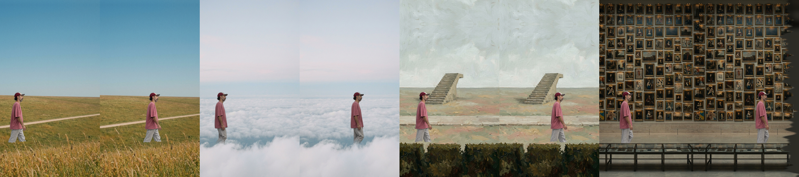

You, walking through the four worlds
First full build with the locked walk. Cutout and composite on the Mac, 0 credits. 11.7 s, loops.
World walk v3a
- Natural walk in every world, no step loop inside a world, no shoulder jump
- Colour holds in all four, feet hidden by grass and cloud as planned
- Travel matched to the planted foot, so he does not slide (checked by eye)
Still open (independent QA: PASS with fixes)

- The dark wipe between worlds looks like a smeared glitch. It needs a real object: a tree, a pillar, a cloud per world
- Painted world: the hedge band has a torn top edge and reads as a cut out
- Museum: the vitrine edge cuts him in a hard line
- He reads smaller in the meadow than in the museum (the plates differ, not the figure: he is 700 px everywhere)